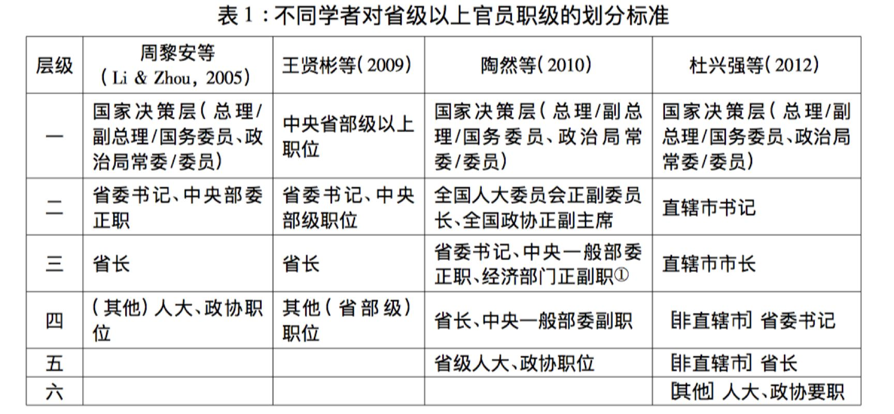
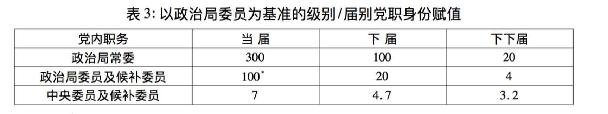
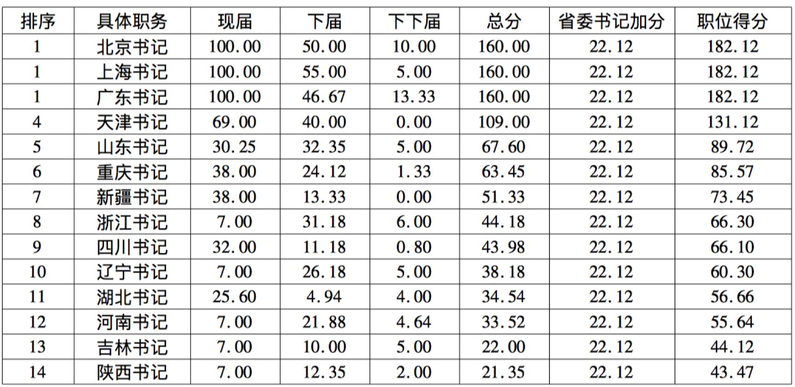
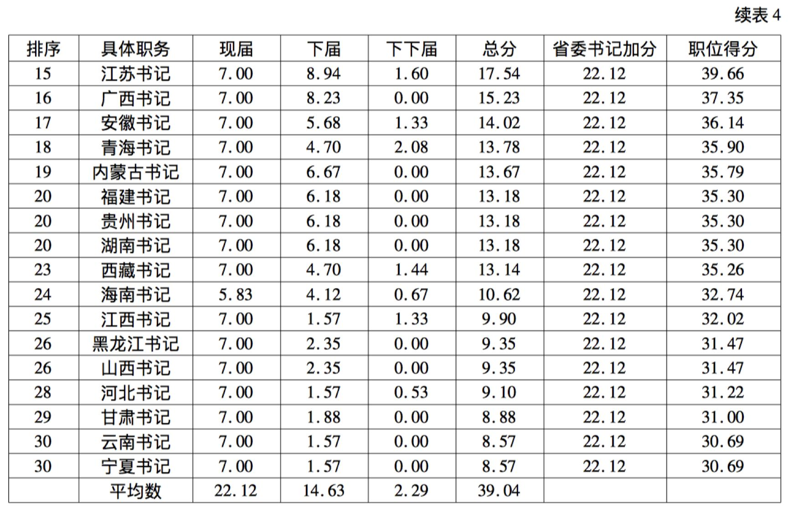
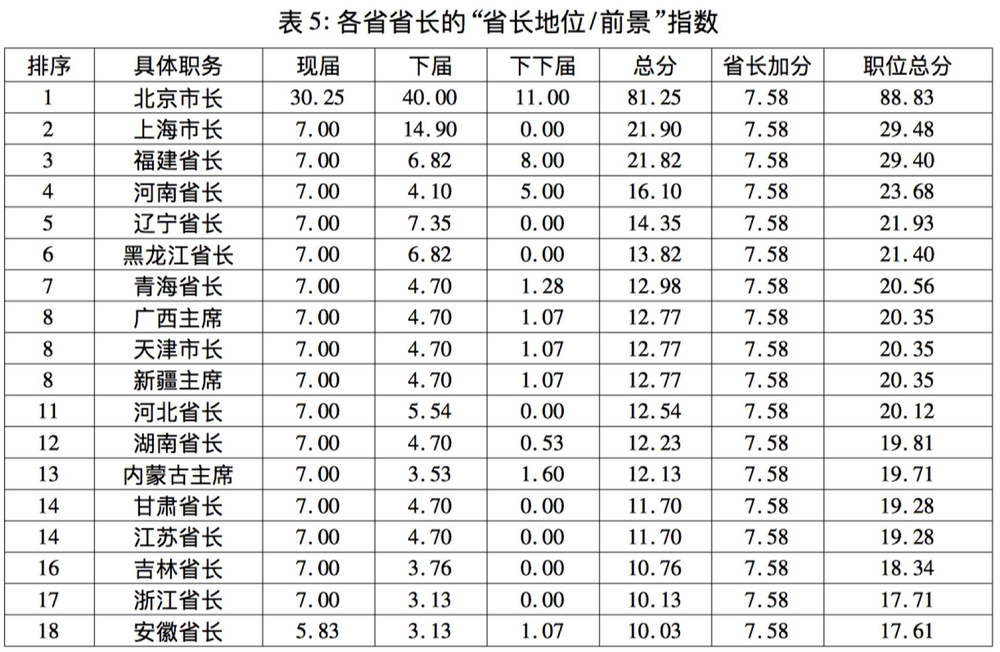
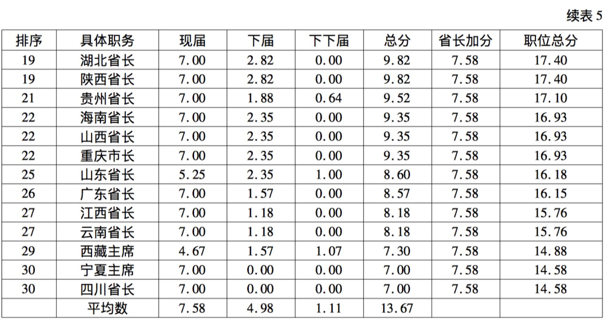

收录于合集
文献来源：《经济社会体制比较》 2014年第5期，第82-95页。
作者简介：耿曙，美国得克萨斯州立大学政府系博士，现任职于浙江大学社会学系研究员、博士生导师。主要研究领域为比较政治经济、政治社会学/经济社会学、中国基层政企关系、基层政府组织、外资/台商研究、台湾研究/两岸关系、定性研究方法、社会科学研究方法等。
内容提要：自“晋升锦标”理论提出以后，学者对官员行为激励与模式有了更为清晰的认识， 但对 “何谓晋升” 的讨论却一直未被重视。根据对各省领导在任及后任的“党内身份”的梳理，作者建立了一套系统的指标，考察每一职位的实际权力大小，帮助辨别同级别官员的政治地位。结果发现，在“［正］省部级”此一行政级别内，存在一些虽非正式但相对稳定的职务层级， 这对理解中央调动省级领导人提供了新的思路。
在官员职级问题上，“正式职级”与“实际分量”似乎存在一定落差。由于辖区大小不同、资源禀赋各异战略地位也有别，即便职级相同，其政治影响、政治前景也可能相去甚远。本文以正省级的领导为研究对象，根据现兼党职考量晋升潜力，再通过加权与平均，测算出各［正 ］省级领导职务的“地位/前景指数”， 建立一套系统的职级排序。从结果来看，不同省份的领导人地位与前景高低不同，不仅如此，无论切分时间段加以验证，还是比照其他相关的研究结论，均得出这一职级排序的稳定性与制度化的特征。

根据作者看法，上述“行政级别标准”存在两个重大问题。首先，行政级别优点本在简单明确，众议签同，但实际结果并非全然如此。“以行政级别论英雄”过分拘泥于正式制度，“并不能完全真实反映官员实际权力和掌控资源能力的多寡”（陶然等，2010：20），而权力与资源才是学者所希望捕捉的。其次，“级别标准”的另一个缺点是对职位的划分过于粗疏。若以行政级别来看，[正]省级官员内部只有“书记（中央部委正省级）—省长”两个级别 其余一律为平级，但调动却不仅限于这两个级别之间。即便采取修正办法，将书记职级判定高于省长，结果仍然只能考察 60%左右的官员调动，无论“书记调任书记”或者“书记中央调任”仍然无法判读。
在辨别官员职级上，第一要纳入党职考量。将“党职身份”纳入职级划分的做法 一方面有助于反映实际权力，另一方面又有利于辨别职级，有效解决前述“级别标准”的两大问题。但党职身份如何引入帮助辨别职级呢？首先，“党职身份”与“行政级别”间既有重叠，又不完全一致，即便同一职务，所兼党职可能大相径庭———有的省委书记兼任政治局委员，其余多数为中央委员或中央候补委 员。其次，党内职务位阶清晰———依次为“政治局常委—政治局委员—中央委员/中央候补委员”———官员只兼单一党职，不太存在界定上的疑义。因此，只要将“行政职务”与“党务身份”彼此交叉，便能帮助辨别同级职务的权力位阶，分析大量的平级调动，从而有利于掌握政府内部的协调模式、行为激励的设计方案等。第二要兼顾职位前景，首先，晋升前景在一定程度上“反映”现任职务的资源与权力，一般而言，越能顺利晋升者，其所掌握的资源往往也越多。其次，晋升前景不仅能“反映”资源，还能“创造”资源。就任前景远大的职务， 必然影响旁人预期，带来更多的上级配合、同级支持与下属追随。
具体来看，本文将政治局委员及候补委员作为基准（为便于考察，赋值为100分）。政治局委员一般为22-25人，从中产生7-9名政治局常委。因此，常委得分为委员3倍（即300分），同理，中央委员及中央候补委员的人数总计为344-376人，中央委员/候补委员及省政治局委员的概率约为7%，因此中央委员得分为7分。
在省级领导中，唯省委书记可能跻身政治局，据党的十五大到十八大人事记录，通常每届书记兼任政治局委员者约6-7人，占书记总数约1/5.因此，对于省委书记而言，下届晋身政治局的期望约为1/5，参照委员身份赋值20分，同理，下下届再1/5，赋值为4分。现职省长则由无缘政治局，只能向中央委员看齐，根据党的十五大到十八大的人事记录，具有中央委员和候补委员身份约占2/3强，因此赋值4.7分，在下届则为3.2分。三届之外，时间跨度过长，晋升前景难以预估。具体做法参见下表3。

按照上表赋值标准，根据“按人给分，分职合计”的方式，先将现届、下届与下下届的得分分别按照任职人数进行平均，加总得分即为该项职务的“地位/前景”（Status/指数Prospect Index /SPI，下文简称“职级指数”）。计算得分之后，即可展开排序与比较。众所周知，在［正］省级职位中，存在“书记”与“省长” 两个潜在的级别，即平均来看，书记也比省长要高出一截。这一点要如何在赋值过程中进一步体现呢？我们的方案是，将现届书记（省长）平均分数在31个省的平均作为“准职级”的加权。再将该项加分与基础分数汇总得到各单项职务的总分，根据这一高低指数，即可精确考察职务变动的升降。




中国经济运作的要角在政府，政府人事体系可说为高速增长提供了制度保证引发了学者对 “官员晋升激励”的重要考察。 但已有研究在涉及判定晋升的标准时，简单以行政级别为标准，判定结果过于粗疏。有别于传统“级别标准”， 本文引入官员的党职身份，同时考量其晋升前景，通过简单的赋值规则，细致地分辨官员职级。本文以中国［正］省级领导为例，逐一排序各省书记 / 省长的职级高低，结果发现，在这些职位内部还存在一些稳定的层级。因此，表面看起来属于平级调动、异地交流，其实更像是一个多次考核、稳步晋升的政府人事管理过程。
为何会出现正式级别外的“细划层级”的制度安排呢？从强化激励的角度来看，只有层级更加细化，才能采用频繁调动的方式作为奖惩手段，促使地方官员努力发展经济。若从这一角度入手，那么本文的层级划分不仅可以作为晋升标准的一个修正，也能为政府人事管理的研究引入新的框架。此外，导致省级领导职级高低不同之客观原因推断可能与辖区禀赋 、官员社会网络等密切相关，后续若能对此展开分析，不仅能对话前人的研究，亦有助于解读“大国地方”。
***后台回复“干部”获取原文